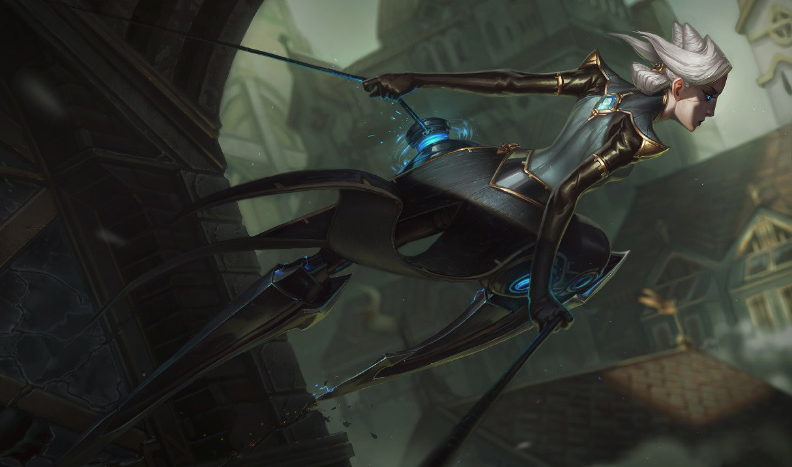

- 나르
- 리븐
- 카밀
카밀

카밀은
법이라는 테두리 밖에서 활동할 수 있도록 아예 자신의 몸을 무기화해 버렸다.
우아한 엘리트 첩보원이자 페로스 가문이 배출한 최고 정보 요원인 그녀의 임무는 고도화된 필트오버와
그 하층부의 자운이 원활하게 돌아가도록 기여하는 것이다. 적응력이 뛰어나고,
정확성을 중시하므로 엉성한 기술은 반드시 정리해 버려야 할 수치로 여긴다.
마법공학 증강을 통해 최고가 되려는 노력, 그리고 자신이 품고 있는 칼만큼이나 예리한 지성을 지닌 카밀의 모습을 보면,
그녀가 이제는 인간 여자보다는 기계에 가까운 존재가 아닌가 하는 의구심 마저 든다.
스킬
기본 지속 효과(passive)
적응형 방어 체계
챔피언에게 기본 공격 시 잠시 동안 카밀 최대 체력의 일부에 해당하는 피해를 흡수하는 보호막이 생깁니다.
적 챔피언이 어떤 피해를 주는지에 따라 물리 혹은 마법 보호막 중 하나만 생성됩니다.
Q
정확성 프로토콜
카밀이 다음 기본 공격 시 추가 피해를 입히고 이동 속도가 증가합니다
.
이 스킬은 사용 후 일정 시간 동안 재사용할 수 있으며, 잠시 기다렸다가 재사용하면 추가 피해량이 크게 증가합니다.
W
전술적 휩쓸기
카밀이 잠시 후 전방을 원뿔형으로 휩쓸어 피해를 입힙니다.
원뿔의 바깥쪽 절반에 있는 적은 이동 속도가 느려지고 추가 피해를 입으며, 카밀의 체력을 회복시킵니다.
E
갈고리 발사
카밀이 벽으로 자신을 끌어당겼다가 다시 도약해 착지 시 적 챔피언들을 기절시킵니다.
R
마법공학 최후통첩
카밀이 대상 챔피언에게 돌진해 일정 지역 내에 가둡니다. 대상에게 기본 공격 시 추가 마법 피해를 입힙니다.